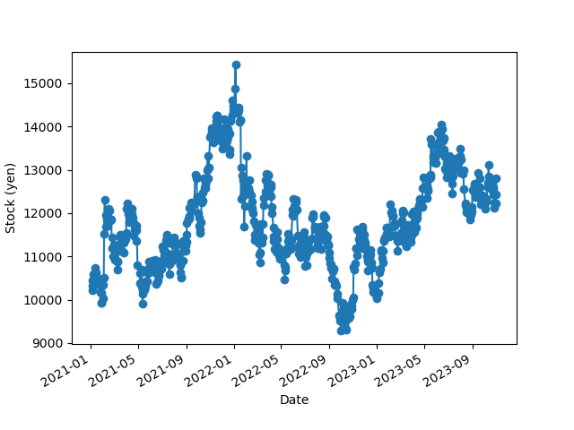
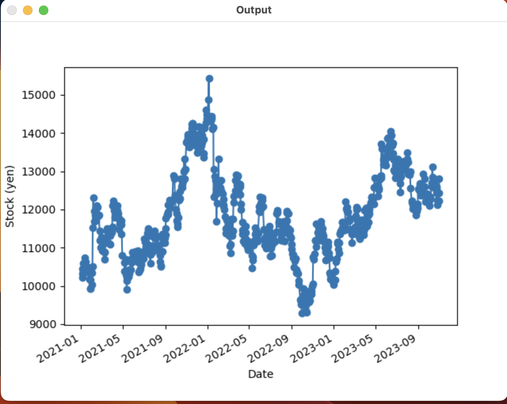

pythonのライブラリ機能で遊ぼう
「株価予想（+自動売買）python」
作ろうと思った理由
アイデアを出す段階で以下のものが上がっていた。
そこで株価予想と自動売買につながるような
pythonコードを書こうと考えた。
実際のコード
2021年01月01日〜2023年11月05日現在のチャート
- import datetime
- import pandas_datareader.data as web
- import yfinance
- # 株価データを取得する関数
- def get_stock_data(meigara_cd:str, from_date:str, to_date:str):
-
- """
- ====================================================
- 引数情報
- ・meigara_cd(str): 銘柄コード
- ・from_date(str): 株価取得期間（開始日）
- ・to_date(str): 株価取得期間（終了日）
- ====================================================
- """
- # 株価データを取得
- df = web.DataReader(name = meigara_cd + ".jp", # 銘柄コード
- data_source = 'stooq', # 株価データソース
- start = from_date, # 株価取得期間（開始日）
- end = to_date, # 株価取得期間（終了日）
- )
-
- return df
- # 本日日付を取得する関数
- def today() -> str:
- return str(datetime.date.today())
- # ==========================================================
- # 関数実行
- # ==========================================================
- # 引数情報
- meigara_cd = "6758" # Sony銘柄
- from_date = "2021-01-01" # 開始日
- to_date = today() # 終了日
- # 関数実行
- data = get_stock_data(meigara_cd,from_date,to_date)
- # ==========================================================
- # 結果確認
- # ==========================================================
- # 出力
- print(data)
- # 出力イメージ
- # Open High Low Close Volume
- # Date
- # 2023-08-17 12000 12140 11920 12130 2960800
- # 2023-08-16 12200 12205 12010 12010 3069300
- # 2023-08-15 12285 12320 12195 12220 3326700
- # 2023-08-14 12415 12490 12075 12175 6287400
- # 2023-08-10 12385 12635 12115 12565 7794900
- import matplotlib.pyplot as plt
- # ==========================================================
- # データ取得
- # ==========================================================
- # 引数情報
- meigara_cd = "6758" # Sony銘柄
- from_date = "2021-01-01" # 開始日
- to_date = today() # 終了日
- # 関数実行
- data = get_stock_data(meigara_cd,from_date,to_date)
- # ==========================================================
- # グラフ可視化
- # ==========================================================
- # グラフ描画
- plt.plot_date(data.index, data["Close"], linestyle='solid')
- # 書式設定
- plt.xlabel("Date") # X軸ラベル
- plt.ylabel("Stock (yen)") # Y軸ラベル
- plt.gcf().autofmt_xdate() # X軸値を45度回転
- plt.show() # グラフ表示

【過去予想】2021年01月01日〜2023年11月05日現在のチャート
- import datetime
- import pandas_datareader.data as web
- # 株価データを取得する関数
- def get_stock_data(meigara_cd:str, from_date:str, to_date:str):
-
- """
- ====================================================
- 引数情報
- ・meigara_cd(str): 銘柄コード
- ・from_date(str): 株価取得期間（開始日）
- ・to_date(str): 株価取得期間（終了日）
- ====================================================
- """
- # 株価データを取得
- df = web.DataReader(name = meigara_cd + ".jp", # 銘柄コード
- data_source = 'stooq', # 株価データソース
- start = from_date, # 株価取得期間（開始日）
- end = to_date, # 株価取得期間（終了日）
- )
-
- return df
- # 本日日付を取得する関数
- def today() -> str:
- return str(datetime.date.today())
- # ==========================================================
- # 関数実行
- # ==========================================================
- # 引数情報
- meigara_cd = "6758" # Sony銘柄
- from_date = "2023-01-01" # 開始日
- to_date = today() # 終了日
- # 関数実行
- data = get_stock_data(meigara_cd,from_date,to_date)
- # ==========================================================
- # 結果確認
- # ==========================================================
- # 出力
- print(data)
- # 出力イメージ
- # Open High Low Close Volume
- # Date
- # 2023-08-17 12000 12140 11920 12130 2960800
- # 2023-08-16 12200 12205 12010 12010 3069300
- # 2023-08-15 12285 12320 12195 12220 3326700
- # 2023-08-14 12415 12490 12075 12175 6287400
- # 2023-08-10 12385 12635 12115 12565 7794900
- import matplotlib.pyplot as plt
- # ==========================================================
- # データ取得
- # ==========================================================
- # 引数情報
- meigara_cd = "6758" # <-ここに銘柄コード四桁を入れましょう
- from_date = "2021-01-01" # <-開始日（チャートの一番左端の日を設定しましょう）
- to_date = today() # 終了日（ここにチャートの右端の日を設定しましょう）
- # 関数実行
- data = get_stock_data(meigara_cd,from_date,to_date)
- # ==========================================================
- # グラフ可視化
- # ==========================================================
- # グラフ描画
- plt.plot_date(data.index, data["Close"], linestyle='solid')
- # 書式設定
- plt.xlabel("Date") # X軸ラベル
- plt.ylabel("Stock (yen)") # Y軸ラベル
- plt.gcf().autofmt_xdate() # X軸値を45度回転
- plt.show() # グラフ表示
- from prophet import Prophet
- import pandas as pd
- from prophet.plot import plot_plotly
- import plotly.offline as py
- # ==========================================================
- # データ取得
- # ==========================================================
- # 引数情報
- meigara_cd = "6758" # <-ここに銘柄コード四桁を入れましょう
- from_date = "2022-01-01" # <-開始日（チャートの一番左端の日を設定しましょう）
- to_date = today() # 終了日（ここにチャートの右端の日を設定しましょう）
- # 関数実行
- data = get_stock_data(meigara_cd,from_date,to_date)
- # Prophet投入用インプットデータ作成
- df = pd.DataFrame({"ds":data.index, "y":data["Close"]}).reset_index(drop=True)
- # ==========================================================
- # 時系列モデル作成
- # ==========================================================
- # モデルインスタンス
- proph = Prophet()
- # モデル学習
- proph.fit(df)
- # ==========================================================
- # 予測
- # ==========================================================
- # 未来予測用のデータフレーム
- future = proph.make_future_dataframe(periods=365)
- # 時系列を予測
- forecast = proph.predict(future)
- # ==========================================================
- # 予測（可視化）
- # ==========================================================
- py.init_notebook_mode()
- figure = plot_plotly(proph, # 時系列モデル
- forecast, # 予測結果
- )
- # 出力
- py.iplot(figure)

また、同じ期間の実際のグラフと過去予想のグラフを、
pythonライブラリ「OpenCV」という画像の差異を検出するツールを使ったところ、
全く違いがなかったので過去予想をすると実際のグラフと同じものを出すことがわかった。
- import cv2
- # Load images
- img1 = cv2.imread('xbp/de12/images/sony_exceptFigure_1.png')
- img2 = cv2.imread('xbp/de12/images/sony_real.png')
- # Convert images to grayscale
- img1_gray = cv2.cvtColor(img1, cv2.COLOR_BGR2GRAY)
- img2_gray = cv2.cvtColor(img2, cv2.COLOR_BGR2GRAY)
- # Calculate absolute difference between the two images
- diff = cv2.absdiff(img1_gray, img2_gray)
- # Apply threshold to identify significant differences
- thresh = 30
- diff[diff < thresh] = 0
- diff[diff >= thresh] = 255
- # Find contours of significant differences
- contours, hierarchy = cv2.findContours(diff, cv2.RETR_EXTERNAL, cv2.CHAIN_APPROX_SIMPLE)
- # Draw rectangles around the differences
- for contour in contours:
- (x, y, w, h) = cv2.boundingRect(contour)
- cv2.rectangle(img1, (x, y), (x + w, y + h), (0, 0, 255), 2)
- # Display the output image with differences highlighted
- cv2.imshow('Output', img1)
- cv2.waitKey(0)
- cv2.destroyAllWindows()

基本的に外部サイトをコピペしたものではあるが、
一部y軸stockの通貨単位がわからなかったので、
改変してある。
未来の株価予想
本題の未来の株価予想だが、
これは、エラーが発生して不可能だった。
以下のが未来の株価予想のコードである。
- import numpy as np
- import pandas as pd
- from sklearn.model_selection import train_test_split
- from sklearn.linear_model import LinearRegression
- # データを読み込む（例：AAPL株価データ）
- data = pd.read_csv('AAPL.csv') # データファイルのパスを指定
- # 必要な特徴量を選択
- data = data[['Open', 'High', 'Low', 'Volume', 'Adj Close']]
- # 予測対象の特徴量を選択（例：Adj Closeを予測）
- forecast_col = 'Adj Close'
- data['label'] = data[forecast_col].shift(-1)
- # 欠損値を削除
- data = data.dropna()
- # 特徴量とラベルを分割
- X = np.array(data.drop(['label'], 1))
- y = np.array(data['label'])
- # データをトレーニングセットとテストセットに分割
- X_train, X_test, y_train, y_test = train_test_split(X, y, test_size=0.2)
- # 線形回帰モデルをトレーニング
- clf = LinearRegression()
- clf.fit(X_train, y_train)
- # 未来の株価を予測
- forecast_set = clf.predict(X_lately)
- # 予測結果を表示
- print(forecast_set)
原因はバージョンの違いか、
コードの記述に過不足があったからだと考えている。
まとめ
今回は過去の株価のチャートをある程度正確に表示することには成功した。
検証のために間違い探しのライブラリの活用を経験し成功例を得た。
しかし、未来の株価予測はできなかった。
もし、できるようになった場合は、今度は自動トレードや、
ドルコスト法を使ったシステムを作りたい。
また、コードを書くプログラマーが代替されるのではないかという話を
聞くことがあるが、
今回CHATGPT3.5も使ってもコピーしても未来予想は
実現しなかったので、プログラマーがchatGPT3.5によって完全に代替されるには
まだ時間がかかりそうだと感じた。